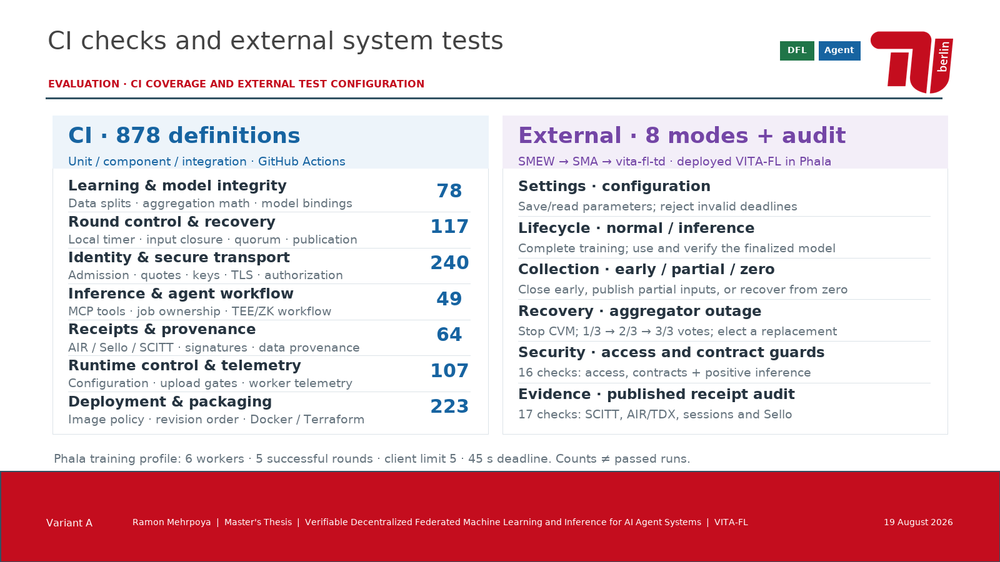
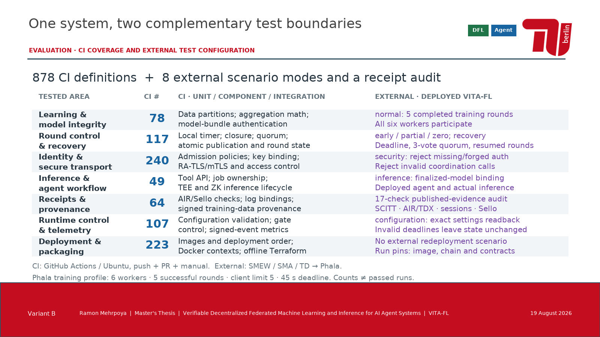
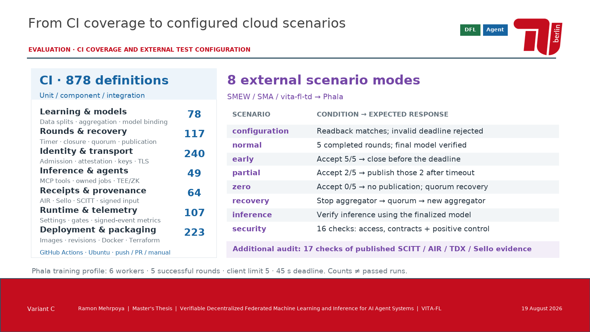

A · Zwei PrüfkatalogeCI nach Prüfgegenstand; externe Szenarien mit ihren wichtigsten Assertions.Editierbare PowerPoint-Folie · Vollbild
B · Gemeinsame VergleichsmatrixVerwandte Prüfgegenstände über die CI- und Deployment-Grenze hinweg vergleichen.Editierbare PowerPoint-Folie · Vollbild
C · Konkrete TestbedingungenCI kompakt links; jeder externe Szenariotyp mit Bedingung und erwartetem Verhalten rechts.Editierbare PowerPoint-Folie · Vollbild